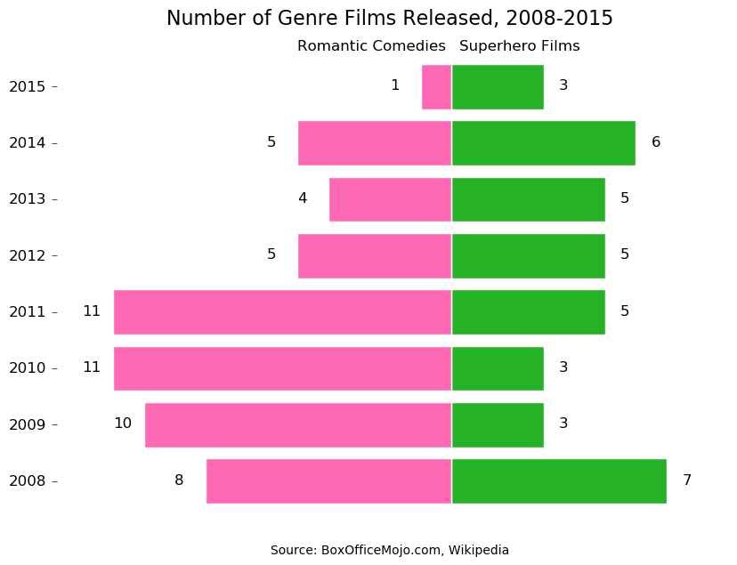
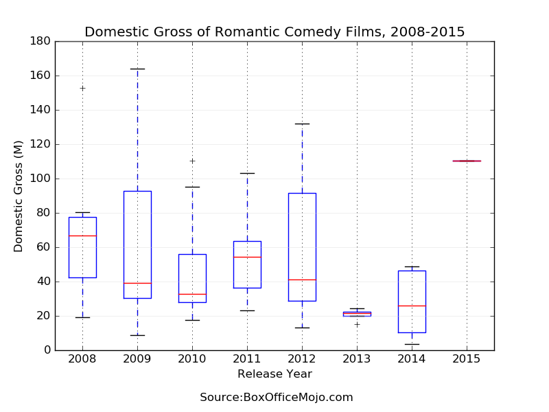
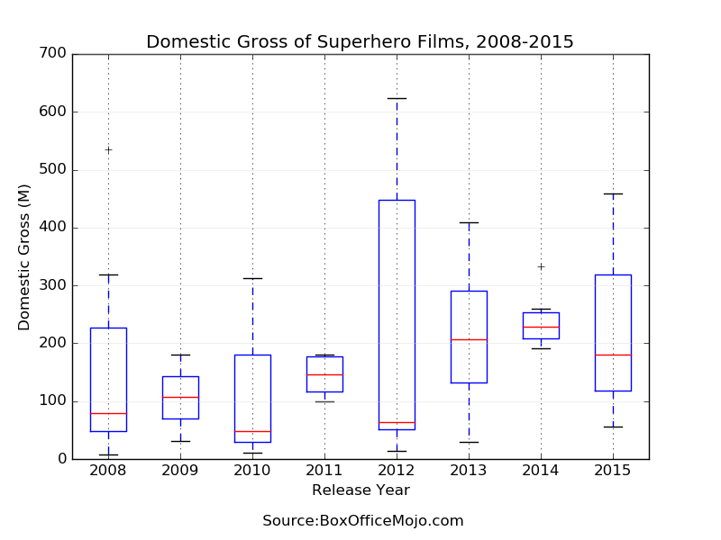
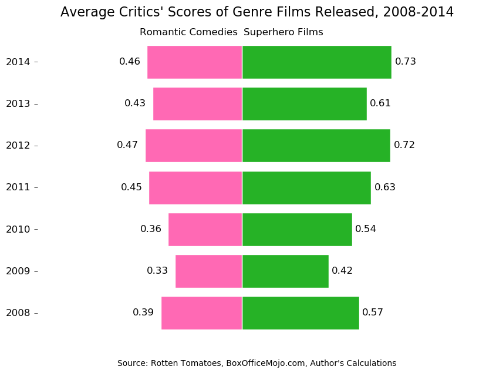

Since I had all that data on superhero films sitting around after my last post, I decided to take a shot at the ongoing debate over whether there are too many superhero movies. The question pops up so often that once I was finished with my analysis, a new article at The Guardian declared "We've reached peak superhero. So which ones should we cull?"
Have we reached peak superhero, though? Even Ben Child, the author of that article at The Guardian, admits "no." And I agree. As long as the films continue to tell excellent stories and bring fans in by the droves, the question of "too much?" is irrelevant. But when we start to see diminishing returns, as often happens with sequel after sequel after sequel, then it's time to ask "WHY ARE THEY MAKING MORE?"
When I hear people say "not another superhero movie," I often think back to the 2000s and the onslaught of romantic comedies. What better example than a film genre that saturated the market for quite some time until everyone wondered how Katherine Heigl was getting so much work. Since I had data on superhero films released between 2008 and 2015, I decided to look at romantic comedies released in the same time period. Maybe I could figure out what happened to the romantic comedy bubble and apply that to superhero films. Or maybe it was just another excuse to test out Python and Markdown.
I scraped all films in the "Romantic Comedy" genre from BoxOfficeMojo and filtered out titles that were released in less than 500 theaters in order to concentrate on big studio releases (since there is really little comparison when it comes to independent or foreign superhero films). This had a "dumbing down" effect on critics' scores, which I gathered from Rotten Tomatoes. Independent and foreign films in the "Romantic Comedy" generally garner more critical acclaim than big-studio releases, but they also make far less money because they play in fewer theaters.
This is final table, sorted by release year:
| Title | Release Year | Critics' Scores | Final Domestic Gross (M) |
|---|---|---|---|
| Trainwreck | 2015 | 0.85 | 110.21 |
| What If (2014) | 2014 | 0.70 | 3.49 |
| Magic in the Moonlight | 2014 | 0.52 | 10.54 |
| Blended | 2014 | 0.14 | 46.29 |
| About Last Night (2014) | 2014 | 0.69 | 48.64 |
| That Awkward Moment | 2014 | 0.23 | 26.07 |
| About Time | 2013 | 0.70 | 15.32 |
| Don Jon | 2013 | 0.81 | 24.48 |
| Baggage Claim | 2013 | 0.14 | 21.57 |
| The Big Wedding | 2013 | 0.07 | 21.82 |
| Playing for Keeps | 2012 | 0.03 | 13.10 |
| Silver Linings Playbook | 2012 | 0.92 | 132.09 |
| What to Expect When You're Expecting | 2012 | 0.22 | 41.15 |
| The Five-Year Engagement | 2012 | 0.63 | 28.84 |
| Think Like a Man | 2012 | 0.53 | 91.55 |
| New Year's Eve | 2011 | 0.07 | 54.54 |
| Crazy, Stupid, Love. | 2011 | 0.78 | 84.35 |
| Friends with Benefits | 2011 | 0.70 | 55.80 |
| Larry Crowne | 2011 | 0.41 | 35.61 |
| Monte Carlo | 2011 | 0.38 | 23.19 |
| Midnight in Paris | 2011 | 0.93 | 56.82 |
| Something Borrowed | 2011 | 0.15 | 39.05 |
| Jumping the Broom | 2011 | 0.56 | 37.30 |
| Arthur (2011) | 2011 | 0.26 | 33.04 |
| Just Go With It | 2011 | 0.19 | 103.03 |
| No Strings Attached | 2011 | 0.49 | 70.66 |
| How Do You Know | 2010 | 0.32 | 30.21 |
| Life as We Know It | 2010 | 0.28 | 53.37 |
| Easy A | 2010 | 0.85 | 58.40 |
| Going the Distance | 2010 | 0.53 | 17.80 |
| Sex and the City 2 | 2010 | 0.15 | 95.35 |
| Just Wright | 2010 | 0.45 | 21.54 |
| The Back-Up Plan | 2010 | 0.18 | 37.49 |
| She's Out of My League | 2010 | 0.58 | 32.01 |
| Valentine's Day | 2010 | 0.18 | 110.49 |
| When in Rome | 2010 | 0.17 | 32.68 |
| Leap Year | 2010 | 0.21 | 25.92 |
| It's Complicated | 2009 | 0.57 | 112.74 |
| Did You Hear About the Morgans? | 2009 | 0.12 | 29.58 |
| All About Steve | 2009 | 0.07 | 33.86 |
| The Ugly Truth | 2009 | 0.13 | 88.92 |
| 500 Days of Summer | 2009 | 0.86 | 32.39 |
| The Proposal | 2009 | 0.44 | 163.96 |
| My Life in Ruins | 2009 | 0.09 | 8.67 |
| Confessions of a Shopaholic | 2009 | 0.25 | 44.28 |
| He's Just Not That Into You | 2009 | 0.40 | 93.95 |
| New in Town | 2009 | 0.29 | 16.73 |
| My Best Friend's Girl | 2008 | 0.14 | 19.22 |
| Sex and the City | 2008 | 0.49 | 152.65 |
| What Happens in Vegas | 2008 | 0.27 | 80.28 |
| Made of Honor | 2008 | 0.14 | 46.01 |
| Forgetting Sarah Marshall | 2008 | 0.85 | 63.17 |
| Definitely, Maybe | 2008 | 0.71 | 32.24 |
| Fool's Gold | 2008 | 0.11 | 70.23 |
| 27 Dresses | 2008 | 0.41 | 76.81 |
Details on where I acquired data on superhero films can be found here. You should probably read that before continuing. Or don't. Whatever.
Here is a side-by-side comparison of the number of genre films released between 2008-2015:

There's less of a normal distribution for superhero films -- or anything that would suggest a peak. But with romantic comedies, you can see a peak between 2009 and the end of 2011. One thing to take into consideration: Superhero films cost more than romantic comedies, which would mean studios would release far less of the former. But the idea that we have reached peak superhero relies on the very fact that there are too many superhero films being released. The upcoming slates from Warner Bros/DC and Disney/Marvel Studios alone suggest we'll be seeing more down the line. For now, however, we're not seeing anything close to the romantic comedy bubble of the late 00s.
Why were so many romantic comedies being produced during this time? Just look at the ranges of total domestic gross for the films grouped by year.

These films, which don't cost as much to make as superhero films, were making back their budget and more during the peak. But something happened post 2012 that soured the public on the genre (with the exception of that lone film in 2015, "Trainwrecked," which made a lot of money because Amy Schumer.)
Now look at the ranges of total domestic gross for superhero films grouped by year.

Profits from superhero films appear to be on the upswing. Yes, the films cost more to make, but the successful ones pull in a large domestic gross as well as big earnings from foreign markets.
If 2016 so far is any indication ("Deadpool", "Batman v. Superman", and the upcoming "Captain America: Civil War"), that trend could continue.
So how did the romantic comedy bubble burst? I can't answer that question definitely.
Based on critics' scores, you could make the argument that the overall quality of the genre slightly improved once the studios started producing less.
The following plot compares the average critics' scores by year for both genres [1].

However, just like I pointed out in the Batman v. Superman post, critics' opinions aren't always the best indication of how successful a film will be. With superhero films released between 2008-2015, there's a strong correlation (0.59) between critics' scores and final domestic gross. With romantic comedies there's an incredibly weak correlation (0.17), suggesting the successful films were essentially review-proof. If you doubt this, look at the combined earnings and Rotten Tomatoes scores of both Sex and the City movies.
Maybe audience scores would give us a better insight into why the bubble burst. But here's the thing, if I've learned anything economics it's that all bubbles sooner or later burst. In Hollywood, trends come and go -- just look at westerns, zombie films[2] and Shrek. So if there's anything we can learn from the romantic comedy bubble, it's that we will reach peak superhero and audiences will eventually stop caring. But maybe that means we'll get one or two good films a year instead of a brooding Superman and Will Smith playing Will Smith as Deadshot.
[1] I removed 2015 because the only major studio release, "Trainwrecked," received great reviews, so it skews the data.
[2] You could write a whole book, and I'm sure someone has, about how the horror genre survives despite the rise and fall of many of its sub-genres. Vampires, zombies, atomic monsters, alien invaders ... it's always a manifestation of what the public currently fears, such as disease, nuclear bombs, Communism, etc. It's one of the reasons I love horror and find it so fascinating.